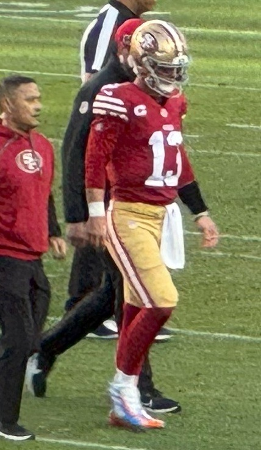
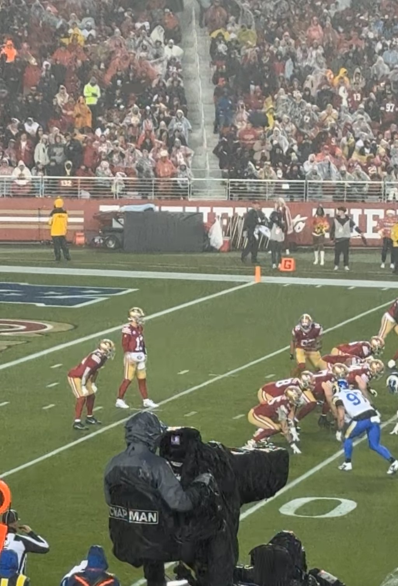

Three Games In, Everybody's Finally Seeing Brock Purdy, and I've Been Saying It for Four Years
A 133.1 rating, nine touchdowns and a 3 and 0 start has half the country changing its mind. His career numbers say this was always who he was, and I'm done hearing it's Kyle or Kittle.

My brother called me Sunday night, about an hour after Kittle caught the one that put Arizona away, and the first thing out of his mouth was "okay, fine, he's good." That's it. No hello. Four years I've been getting "system quarterback" texts from this man, and he folded on a random Sunday in September like it was nothing.
He's not the only one. The guy at work who used to call Brock a game manager asked me Monday if I thought Purdy was a top five quarterback now. I told him he was asking the wrong question.
Three games. That's all it took for a big chunk of the country to wake up. And I love it, I really do, but I'd be lying if I said it didn't also make me a little crazy, because nothing Brock Purdy's doing right now is new. He's been doing this since the day he walked in. People just finally decided to look.

What the first three weeks actually looked like
Sixty of 83. 789 yards. Nine touchdown passes and one interception. A 133.1 passer rating, 72.3 percent completions, 9.5 yards every time he lets it go. His QBR through three games is 93.6, and nobody has been higher through three weeks since that stat showed up in 2006. Not Brady in 2007, not Peyton in 2013, not Josh Allen two years ago. All three of those guys won MVP, by the way. I'm just saying.
And we're 3 and 0.
Melbourne was the "bad" game, if you can call a 27 to 7 beatdown of the team everybody picked to win the West bad. He threw a pick in the second quarter trying to get it to Kittle, and I yelled at my TV so loud on a Thursday evening that my neighbor knocked on the wall. Then he threw three touchdowns. 25 of 34. That's his bad game. That's the floor.
Then Miami came to Levi's and he went 20 of 22. Twenty of twenty two! He completed 18 in a row at one point, the first five drives all ended in touchdowns, and this franchise hadn't done that since 1991. I was on the couch in a jersey older than some of our rookies, just laughing, because what else do you do.
Arizona was supposed to be the letdown. It wasn't a clean game, the defense let a 23 to 6 lead turn into a nail biter, and I'm not getting into that again. But Brock went 15 of 27 for 297 yards and four touchdowns with no picks, ran one in that got called back on a Kittle hold, and then rolled right and hit Kittle for 20 yards with 1:31 left to end it. Eleven yards a throw. He doesn't need 40 attempts. He needs one look.
Even Kyle said it after the game: "I think it's really hard to be playing much better than he is playing right now." Kyle doesn't gush. When Kyle gushes, write it down.
This isn't a hot streak, and I've got the receipts
This is the part that drives me up a wall. People are acting like Brock caught fire three weeks ago. Go look at the career line. I'll wait.
979 of 1,436. 12,474 yards. 93 touchdowns, 38 interceptions. 8.7 yards per attempt for his whole career. Rookie year, a 107.3 rating. 2023, 4,280 yards, 31 touchdowns and a 113.0. Even the years people used to hold against him, 2024 and last season, he was at 96.1 and 100.5, and those were the years half the roster lived in the trainer's room and I was writing about injuries every other week.
Put it all together and his career passer rating is 105.7.
You know who leads the NFL all time in career passer rating? Lamar Jackson, a little over 102. Aaron Rodgers is right behind him around 101.9, and Mahomes is under 101. Brock's sitting at 105.7. The only reason he isn't on that list yet is the league makes you throw 1,500 passes to qualify, and he's 64 short. That's two games. Maybe three if Kyle keeps pulling him early the way he did against Miami.
So when I say he might be the best quarterback in NFL history, I'm not saying it to get a rise out of anybody. I'm a homer, I know I'm a homer, and I'm telling you the number that decides who the most efficient passer ever is has his name at the top of it the second he's eligible. The stats don't lie. They never did. People just didn't want to read them.

"It's Kyle." "It's Kittle." Give me a break.
I've heard every version of this. It's the system. It's Kyle drawing guys open. It's Kittle, it's the YAC, it's anybody but the quarterback. Somebody in my group chat once said Brock was "just the guy holding the clipboard between handoffs," and I haven't forgotten, and I'm not going to.
Kyle's been here since 2017. He's had Jimmy Garoppolo. He's had Nick Mullens and C.J. Beathard. He traded three first round picks to go get Trey Lance. Same coach, same playbook, a lot of the same weapons, and not one of those guys did what Brock's doing. If the system turns anybody into this, why'd it take five years and the 262nd pick of a draft to find the guy it works for?
And Kittle, come on. I love George Kittle. I'd help the man move a couch. But nobody ever told Mahomes he's only good because of Travis Kelce. Great quarterbacks throw to great players. That's how it works for everybody. It only turns into a knock when it's the kid who got picked last.
Look at who he's throwing to right now, too. Mike Evans wasn't even here last year, and Brock's got him humming three games in like they've been doing it for a decade. At some point the common denominator is the guy with the ball in his hands.
I'm done defending him, because he doesn't need it anymore. That's the best part of these three weeks. For years I was the guy at the barbecue with the stats pulled up on my phone, and now I don't have to say a word. The tape's saying it for me.
Denver's at Levi's Sunday. Sixty four more attempts and he's on the list, and if the number holds, he's on top of it. I'll be up way too early that morning for no reason, pacing, refreshing the injury report, in the same jersey. I haven't washed it since Melbourne and I'm not starting now.
Everything else lives on the career passer rating page, the record chase, and the three recaps: Melbourne, Miami and Arizona.
And if you still think it's all Kyle and the weapons, I went through the injuries and the healthy years one by one in why Brock is the best quarterback in the NFL.
More coverage: 49ers · NFL · Bay Area Sports Blog home